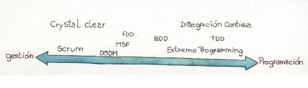
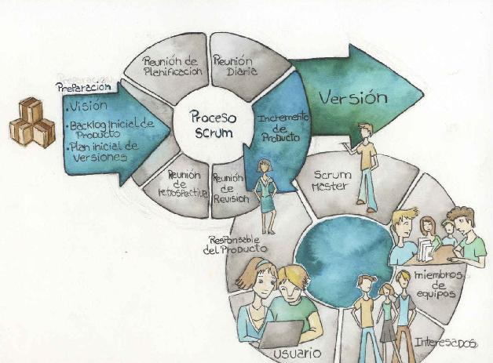
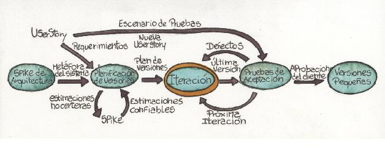
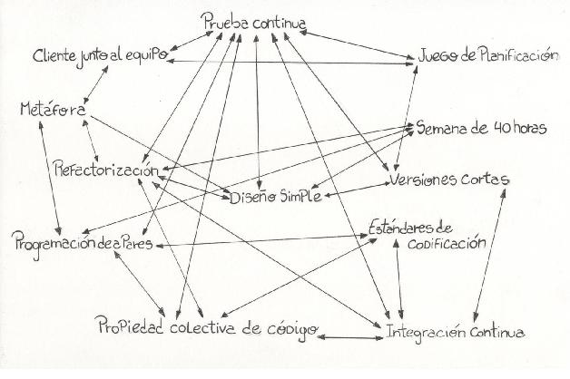
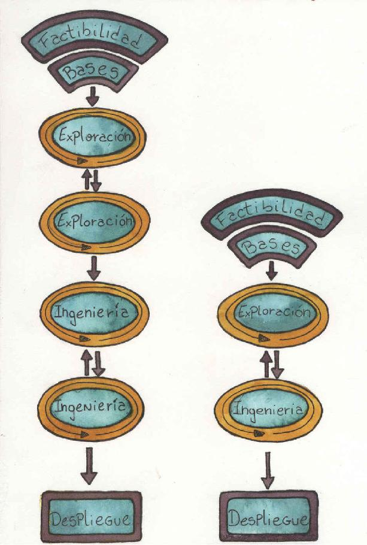
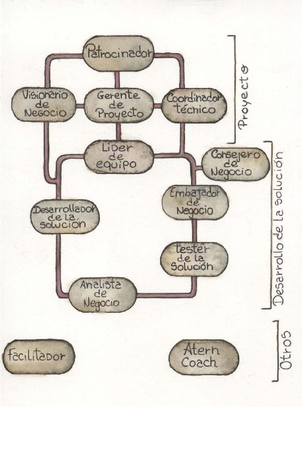
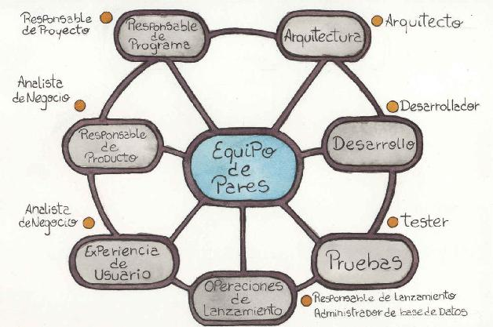
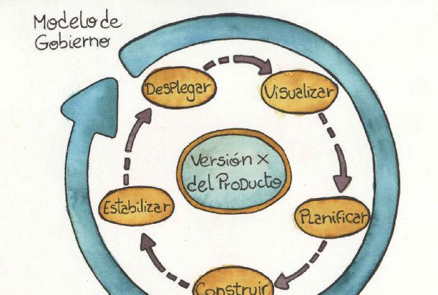

La riqueza de la diversidad
A lo largo de todo el libro hemos hablado de las generalidades de los métodos ágiles. En este apéndice daremos una mirada rápida a algunos métodos ágiles en concreto.
El espectro de métodos ágiles
Dentro de lo que habitualmente se denominan métodos ágiles, se encuentra un variado espectro de técnicas, prácticas y metodologías. En forma genérica nos referimos a ellos como métodos. En un extremo de este espectro de métodos se encuentran los relacionados a cuestiones de gestión mientras que en el otro se encuentran aquellos más relacionados con cuestiones cercanas a la programación y el código fuente. Ocurre al mismo tiempo que gran parte de los denominados métodos de gestión son aplicables en diversos entornos mucho más allá del software, cosa que no ocurre con los del otro extremo.
Figura A1.1. Universo de métodos ágiles.

Los métodos y el manifiesto
Dependiendo de la forma en que uno se acerque a los métodos ágiles, puede que comience por algún método “completo” o bien por alguna práctica en particular, pero generalmente en algún momento, más tarde o más temprano uno llega a preguntarse: ¿qué define un método como ágil? Uno quisiera tener un algoritmo para que, dado un método de desarrollo, poder obtener una respuesta del tipo “Sí, es ágil” o “No es ágil”. Desconocemos si dicho algoritmo existe, pero sin duda debería, en última instancia, validar el método de desarrollo en cuestión, a la luz del manifiesto ágil, pues es la única fuente formal universalmente aceptada sobre el agilismo. Entonces, podemos decir que un método es ágil si está alineado con el manifiesto. Si queremos bajar esto a algo más concreto podríamos decir que todo método ágil en primer lugar no debería contradecir al manifiesto y luego debería estar alineado con los siguientes puntos:
• Incorporar feedback del cliente en forma frecuente.
• Tomar el valor de negocio como principal guía del proyecto.
• No olvidar que estamos tratando con personas.
• Ser capaz de adaptarse fácilmente a los cambios.
• Buscar la mejora continua.
Agilidad y disciplina
Si uno se pusiera a contar la cantidad de “reglas” definidas por los distintos métodos ágiles, notaría que en comparación con otros, son muchas menos. Esto podría llevar a pensar que son “más fáciles de aplicar” pero es erróneo. Veamos por qué. Si uno utiliza un método A que define cien reglas, pero por alguna razón, se ignoran cinco, se puede decir que se cumple con el 95% del método.
En otro escenario, supongamos que un método B define diez reglas, si uno “ignora” cinco, entonces está cumpliendo con el método solo en un 50%, y decrecen considerablemente las probabilidades de éxito de lo que se está haciendo, ya que las reglas pertenecientes a un sistema guardan cierta relación entre sí.
La combinación más común: Scrum + XP
Como ya mencionamos, el espectro de métodos ágiles es muy amplio, pero todos comparten la misma base: el manifiesto. Es por ello que resulta común trabajar con más de uno a la vez, combinando generalmente uno de gestión con uno o más técnicos. En este sentido, una de las fórmulas más populares es usar Scrum como método de gestión combinado con las prácticas de XP. Veamos entonces una pequeña reseña.
Scrum
Si bien sus orígenes se remontan a la década de 1980, su aplicación en el desarrollo de software fue formalizada en 1995 cuando Jeff Sutherland y Ken Schwaber publicaron un trabajo titulado “Scrum methodology” en la conferencia OOPSLA [Sutherland 95].
Siendo estrictos debemos decir que Scrum es un marco de trabajo que propone un proceso, un conjunto de prácticas y roles, dejando a criterio del lector si es suficiente para denominarlo metodología.
Una particularidad de Scrum es que es un método de gestión de aplicación general, lo cual permite que sea utilizado más allá del desarrollo de software.
El flujo de trabajo
Scrum propone un esquema de trabajo iterativo incremental dado por iteraciones denominadas Sprints. Un Sprint es una iteración de tiempo fijo (time-boxed) de máximo un mes de duración, durante la que el equipo genera un incremento de producto en condiciones de ser liberado. Al mismo tiempo, Scrum propone un control de proceso empírico que se basa en la idea de que el conocimiento procede de la experiencia y que es en base a ella que deben tomarse las decisiones. Llevar esto a la práctica implica inspeccionar y adaptar en forma continua a lo largo de todo el proyecto, para lo cual Scrum define los siguientes cuatro eventos dentro de cada Sprint:
• Reunión de planificación: se realiza al comienzo de cada Sprint. En ella colaboran el product owner y los miembros del equipo planificando el Sprint y armando el Sprint Backlog.
• Reunión diaria: se realiza todos los días y su duración está restringida a 15 minutos. En ella cada miembro del equipo comenta su avance desde la anterior reunión, que planea hacer hasta la siguiente y si tuvo algún impedimento.
• Reunión de revisión: se realiza al final de cada Sprint con el objetivo de que los miembros del equipo presenten el incremento del producto al product owner para su aprobación formal. También pueden participar otros interesados del proyecto y trabajando todos colaborativamente se adapta el product backlog a partir de lo detectado en el producto actual.
• Reunión de retrospectiva: se realiza a continuación de la reunión de revisión, pero solo participan los miembros del equipo. Es un espacio para que el equipo identifique oportunidades de mejora, inspeccionando las relaciones interpersonales, las herramientas y el proceso.
Roles
Scrum define tres roles: Miembro de Equipo, Product Owner y Scrum Master.
Los miembros de equipo son los técnicos a cargo de la construcción del producto. Aquí debemos destacar que Scrum no hace ninguna mención explícita de roles dentro del equipo, sino que solo habla de miembros de equipo a secas. Se espera que sea autoorganizado y multidisciplinario. Dado que es el equipo el que construye el producto, son sus miembros quienes lo deben estimar. El equipo trabajará implementando el producto en base a las definiciones y prioridades provistas por el Product Owner.
El Product Owner es literalmente el dueño del producto y como tal, responsable para definir sus funcionalidades y priorizalas. Durante el desarrollo de una funcionalidad debe colaborar con el equipo para despejar dudas y brindar feedback. Además, es el responsable de la aceptación de las funcionalidades una vez terminadas.
Por último, tenemos al Scrum Master que es el responsable de que el equipo aplique Scrum. Muchas veces se lo suele confundir con una especie de jefe o con el clásico líder de proyecto, lo cual es incorrecto. Es un facilitador, una especie de guía espiritual que vela porque el equipo aplique las prácticas de Scrum.
Puede que en un determinado contexto la definición de las características del producto dependan de varias personas, en ese caso, quien ocupe el rol de Product Owner deberá lidiar con todos ellos con el fin de que el equipo pueda confiar plenamente en la palabra del Product Owner.
Los artefactos
El artefacto más importante de Scrum es el denominado Product Backlog, en ocasiones traducido como pila de producto. Es básicamente una lista de funcionalidades a construir para completar el producto. Cada uno de los ítems de este backlog es justamente eso, un ítem de backlog: Scrum no entra en mayor detalle, no dice como se especifican esos ítems.
Cuando se utiliza Scrum en conjunto con XP, cada Product Backlog ítem es una User Story.
Además del Product Backlog existe un Spring Backlog, que contiene el subconjunto de Product Backlog ítems seleccionado para ser trabajado durante el Sprint actual junto con las tareas que el equipo ha identificado que deben llevar a cabo para completar los ítems del backlog.
Por último, al finalizar cada Sprint, se obtiene un incremento de producto dado por el conjunto de funcionalidades completadas durante el Sprint en cuestión. Las funcionalidades incluidas en el incremento de producto deben estar en condiciones de ser liberadas para ser utilizadas por los usuarios.
Scrum en una imagen
La siguiente figura muestra los eventos, los roles y los artefactos de Scrum.
Para aquellos interesados en profundizar en Scrum la primera recomendación es el libro escrito por Ken Schwaber y Mike Beedle, Agile software Development with Scrum [Schwaber 2001].
Figura A1.2. Scrum en una imagen.

Extreme Programming166 (XP)
Es una metodología trabajo para la construcción de software. Sus primeras aplicaciones datan de mediados de la década de 1990 pero el primer libro que la formalizó fue el de Kent Beck en 1999 [Beck 1999].
Tal vez algo curioso de esta metodología es que como parte de su definición hay un hincapié muy importante en cuatro valores:
• Simplicidad
• Comunicación
• Respeto
• Coraje
El flujo de trabajo
La siguiente figura muestra el flujo de trabajo propuesto por XP junto con algunas de las prácticas más comunes.
Figura A1.3. Flujo de trabajo de XP.

Como puede observarse el flujo de XP es compatible con el propuesto por Scrum, ya que el flujo propuesto por este es lo suficientemente genérico para permitir la inclusión de las prácticas propuestas por XP. Es así que mientras que Scrum habla de Sprints, XP se refiere a iteraciones. Mientras que Scrum habla en modo genérico de Backlog ítems, XP habla de user stories.
Roles
Existen cuatro roles principales. El primero es el Customer, el cliente, básicamente una persona con conocimiento del negocio que sabe que es lo que el sistema en desarrollo debe hacer. Se espera que la persona que ocupe este rol deje de hacer su trabajo cotidiano para ser parte del equipo de desarrollo. Tendrá su espacio de trabajo junto al equipo y cada día se dedicará a hacer pruebas de aceptación (customer tests). Es por esto que a este rol se lo suele denominar on-site customer.
El siguiente rol es el Programador, que es quien construye el producto, lo cual implica bastante más que programar. En la concepción de XP, el programador hace todas las tareas necesarias para programar y lograr la aprobación de la funcionalidad construida. Junto con el customer son los dos roles indispensables en todo proyecto.
El Tester es un rol también presente en otras metodologías, pero en este caso tiene una concepción distinta. Se espera que trabaje en conjunto con el Customer creando pruebas funcionales, implementando el código necesario para automatizar dichas pruebas y ejecutándolas una vez listas. Es importante destacar que en XP hay un equipo, que incluye tanto a programadores como testers y que cuando un ítem se considera completo es porque ha pasado por el tester y la aceptación del customer (esto está en línea también con el enfoque de Scrum, aunque es un poco más explícito).
El Coach ayuda al equipo para hacer XP, guía con el ejemplo y es su mentor. Podría decirse que su presencia es obligatoria para todo equipo que comience a trabajar con XP, pero al mismo tiempo un buen coach es el que logra que el equipo adopte exitosamente XP haciendo que la presencia del coach ya no resulte necesaria. Es por esto que, en alguna bibliografía, el coach es considerado un rol complementario.
Adicionalmente, existen algunos otros roles complementarios que pueden o no estar presentes en un equipo XP: el tracker y el gran jefe (the big boss). El tracker se encarga de llevar el calendario del proyecto y ciertas métricas como la velocidad del equipo. El gran jefe es un rol gerencial que no forma parte del equipo en el día a día. Es quien debe encargarse de que el equipo cuente con los recursos necesarios y quien se encarga de las cuestiones contractuales/legales.
Las distintas publicaciones sobre XP a lo largo del tiempo, comenzando por el primer libro publicado por Beck, han ido variando la definición de los roles complementarios, incluso haciendo mención en algunos casos a otros roles no mencionados aquí como XPManager y Consultor.
Las prácticas
En el corazón de XP hay doce prácticas de desarrollo, casi todas ellas de índole técnica. Algunas de ellas han tenido repercusión mucho más allá de XP y por eso han sido tratadas en capítulos anteriores.
1. El juego de planificación (the planning game), los expertos del negocio y los técnicos del equipo de desarrollo planifican el trabajo. La gente de negocio presenta las necesidades, los técnicos preguntan para poder estimar. Los expertos de negocio priorizan las necesidades y finalmente asumen un compromiso de entrega para determinada fecha.
2. Versiones pequeñas, al realizar la planificación, trabajar siempre en pequeñas entregas de manera de poder entregar valor en forma frecuente, típicamente cada dos semanas.
3. Metáfora del sistema, establecer una visión de alto nivel del sistema para guiar la construcción y facilitar su diseño.
4. Diseño simple, elegir siempre la opción más simple que pueda funcionar. Como es inevitable que los requerimientos cambien, no tiene sentido invertir en un diseño complejo que luego deberá ser cambiado.
5. Prueba continua (continuous testing), el sistema se prueba de forma constante a medida que se va desarrollando, generando pruebas automatizadas. Los programadores son responsables de la prueba unitaria, la cual suele escribirse incluso antes de escribir el código debido al uso de la técnica de diseño basado en pruebas (TDD). También se automatizan las pruebas de aceptación, las cuales son escritas por el customer con apoyo del tester. Cuando las pruebas de aceptación pasan, se considera que la correspondiente user story ha sido completada.
6. Refactoring, se utiliza esta técnica para permitir la continua evolución del código para facilitar su posterior mantenimiento.
7. Programación de a pares, el código es escrito por dos programadores trabajando en una misma máquina, pues dos cabezas piensan mejor que una, aumentando la calidad del código y disminuyendo el porcentaje de errores en la aplicación167.
8. Propiedad colectiva del código (collective code ownership), todo el código es de todos los miembros del equipo y por eso todos tienen el poder de modificarlo. No hay nadie que sea “propietario” de alguna porción específica.
9. Integración continua, todo el código del sistema es integrado, al menos una vez al día, procurando estar listos para liberarlo en cualquier momento.
10. Semana laboral de 40 horas, el equipo debe trabajar de forma tal de poder asegurar un ritmo sostenible, ya que no hay forma que un equipo trabaje en forma continua 60 horas semanales. Puede que un equipo trabaje, 35, 40, 45 horas semanales, pero generalmente se habla de 40 horas en forma genérica haciendo referencia a un ritmo sostenible razonable.
11. On-site customer, el customer tiene que estar todo el tiempo disponible para evacuar las dudas de los técnicos, por ello deja su puesto de trabajo habitual para mudarse con el equipo de técnicos.
12. Estándares de codificación, todo el código es escrito siguiendo ciertas normas definidas por el propio equipo, lo cual facilita la comunicación y permite que todos se sientan cómodos modificando cualquier parte del sistema.
Estas prácticas, si bien son relativamente pocas, están íntimamente relacionadas y es imprescindible que se apliquen todas en forma conjunta para así aumentar la probabilidad de éxito utilizando este método. La siguiente figura muestra como cada práctica influyen en otras.
Figura A1.4. Relación entre las prácticas de XP.

Otros métodos no tan difundidos
Como ya mencionamos, más allá de Scrum y XP existen otros métodos, tal vez menos populares, pero no por ello menos ágiles. A continuación enumeramos algunos alternativos mencionando algunas de sus características distintivas.
DSDM
El Dynamic System Development Model es un método desarrollado en el Reino Unido a mediados de la década de 1990. En sus comienzos, reunió varias de las prácticas propuestas por el enfoque RAD. A largo de los años ha evolucionado incorporando varias lecciones aprendidas y generando nuevas versiones. La versión actual es conocida como Atern.
Una particularidad es que su foco es el desarrollo de sistemas de información con restricciones de calendario y presupuesto, permitiendo que el alcance sea variable.
Otra particularidad interesante es que define explícitamente ciertos prerrequisitos para su uso. Entre ellos se destaca aceptar que el principal factor de fracaso en los proyectos es de índole humana.
Al mismo tiempo toma como fundamentales los siguientes principios:
• Foco en las necesidades de negocio.
• Entrega a tiempo.
• Colaboración.
• Nunca comprometer la calidad.
• Construir sobre bases firmes.
• Desarrollo iterativo.
• Comunicar continua y claramente.
• Demostrar control.
DSDM está estructurado en siete fases que cubren desde la concepción de proyecto (pre proyecto) hasta su finalización (post proyecto) y donde distintos esquemas iterativos pueden plantearse combinando dichas fases.
En cuanto a los roles, los mismos se presentan en dos grupos: Roles de Proyecto y Roles de desarrollo.
La fuente oficial de información de DSDM es el sitio del Consorcio DSDM: http://www.dsdm.org/”.
Figura A1.5. Ejemplo de posibles estructuras iterativas de fases.

Figura A1.6. Roles de DSDM/ Atern.
Feature Driven Development
Este método fue propuesto por Jeff De Luca en 1997 para lidiar con un proyecto de cincuenta personas que debía ser completado en quince meses. Este punto inicial de por sí solo ya marca una diferencia con varios de los otros métodos ágiles que generalmente proponen equipos más pequeños. El hecho de trabajar con equipos grandes tiene varias implicancias que llevan a diferencias radicales en la forma en que se enfocan ciertas cuestiones. Para aquellos interesados en ahondar en este método, el punto de entrada es el sitio es su website www.featuredrivendevelopment.com.
Crystal Clear
Crystal Clear un método ágil desarrollado por Alistar Cockburn y pertenece a la familia de métodos Crystal. Está enfocado en las personas y en prácticas de gestión. Se lo puede ubicar más cerca de Scrum que de XP.
El punto de partida para este método es el libro escrito por el mismo Alistar Cockburn [Cockburn 2004].
Microsoft Solution Framework
Durante la década de 1990 Microsoft formalizó su metodología de desarrollo de software con el nombre de Microsoft Solution Framework (MSF). Desde sus comienzos propuso un modelo de proceso iterativo e incremental, incluyendo varias prácticas más del espectro de los métodos ágiles. Hacia 2005 Microsoft liberó la cuarta versión de MSF la cual introdujo dos variantes de implementación, una para integración con el modelo propuesto por CMMI y otra para desarrollo ágil.
El núcleo de MSF es el mismo para ambas variantes, la diferencia está a nivel de implementación, ya que para poder integrarse con el modelo CMMI es necesario generar algunos artefactos adicionales. En el núcleo de MSF se define un modelo de equipo, un modelo de gobierno168, tres disciplinas (gestión de proyecto, gestión de riesgos y gestión de la preparación169) y un conjunto de principios y modos de pensar170. Es una metodología completa en el sentido que define un proceso, un conjunto de roles con sus responsabilidades e incluso define en forma explícita las tareas y artefactos sobre los que cada rol debe trabajar.
Resulta especialmente interesante para aquellos que trabajen en el desarrollo de un producto171.
Figura A1.8. Modelo de gobierno de MSF.

Figura A1.7. Modelo de equipo de MSF.

Lean y Kanban
Lean es una forma de trabajo surgida del estilo de manufactura utilizado por Toyota y caracterizada por siete principios:
1. Eliminar los desperdicios.
2.Ampliar el aprendizaje.
3. Decidir lo más tarde posible.
4. Entregar lo más rápido posible.
5. Potenciar al equipo.
6. Construir integridad.
7.Ver todo el conjunto.
En 2003 Mary y Tom Poppendieck publicaron su libro Lean Software Development: An Agile Toolkit [Poppendieck 2003] en el que proponen un conjunto de herramientas para transformar cada principio Lean en prácticas ágiles. Algunas de las herramientas son: identificar desperdicios, utilizar iteraciones y sistemas pull.
Años más tarde, David Anderson utilizó las ideas de Lean en lo que denominó el método Kanban. Algunas características son:
• Se enfoca en el flujo de trabajo para lo cual propone limitar el trabajo en progreso. Este límite aumenta el flujo y la continuidad del trabajo a través de todas las etapas del proceso de desarrollo. En caso de surgir impedimentos, se debe trabajar en ellos para solucionarlos a la brevedad en lugar de agregar nuevas tareas que aumentarían el trabajo en progreso.
• Utiliza prácticas de gestión visual para explicitar y gestionar el flujo de trabajo tal como se explicó en el capítulo “Irradiando Información”. El uso de estas técnicas visuales permite identificar el trabajo en progreso y detectar cuellos de botella con facilidad.
• No utiliza iteraciones. Quizás este punto es el aspecto más polémico de Kanban y por eso dedicamos algunos párrafos más al respecto.
Como ya mencionamos, los sistemas Kanban parten de la base que al limitar el trabajo se permite detectar a la brevedad los cuellos de botella y los problemas, logrando un flujo continuo de tareas. De esa forma, no sería necesario tomarse el tiempo para estimar ni para hacer una revisión completa con el cliente de toda la iteración, como propone Scrum, ya que se van liberando las funcionalidades en la medida en que el trabajo fluye. Por otro lado, si bien las estimaciones le sirven al cliente para poder priorizar funcionalidades según el costo, también se pueden utilizar medidas en base a una simple estimación de orden de magnitud como para poder decidir, por ejemplo, “bajo, medio, alto, muy alto”, y se eliminarían las reuniones de planificación y estimación. También el cliente podría cambiar prioridades en cualquier momento sin generar impactos con el compromiso del equipo, ya que no se trabaja sobre un grupo de tareas de iteración sino sobre lo que más valor aporte en el momento. Así se pueden hacer despliegues a producción a medida que las funcionalidades se terminan y no hay que esperar a que se concluya con todo el trabajo de la iteración.
Ahora bien, los autores consideramos que este esquema de trabajo podría aplicarse en contextos donde los requerimientos son volátiles y poco claros, con prioridades poco definidas y muy cambiantes. Por ejemplo, en servicios de mantenimiento con nuevas tareas que surgen y cambian día a día, y no sobre proyectos con un alcance más concreto y objetivos claros. El foco principal estaría puesto en asegurar el flujo de tareas y analizar constantemente la posibilidad de aumentarlo y eliminar los desperdicios (como los cuellos de botella e impedimentos).
Resulta interesante la propuesta de James Shore [Shore 2008] que tiene el siguiente criterio para decidir cuando utilizar iteraciones o un sistema Kanban:
• Si el equipo es nuevo en la planificación ágil, utilizar iteraciones. Ser disciplinado y cumplir con el criterio de “hecho” en cada iteración, usar slacks, conseguir una velocidad estable que permita comprometerse y cumplir con los compromisos.
• Si se está desarrollando un nuevo producto o una nueva versión para uno existente, usar iteraciones. Crear una visión, hacer un plan de entregas, conseguir un cliente realmente comprometido. El objetivo es crear un producto con un valor significativo y se beneficiará de la previsibilidad que brindan las iteraciones.
• Si está en un ambiente donde las tareas cambian constantemente o son difíciles de predecir, probar con Kanban, que convertirá el caos en un flujo de tareas constante y suave. Por ejemplo, entornos empresariales o mantenimiento de sistemas maduros.
166 En algunos países se lo llama Programación Extrema, pero en este contexto utilizaremos XP que es la abreviatura en inglés de Extreme Programming.
167 En algunos contextos está práctica hace innecesario el uso de revisiones por pares.
168 El término original es governance.
169 El término original es readiness.
170 El término original es mindset.
171 Toda la documentación está disponible online en msdn.microsoft.com/enus/library/jj161047.aspx.